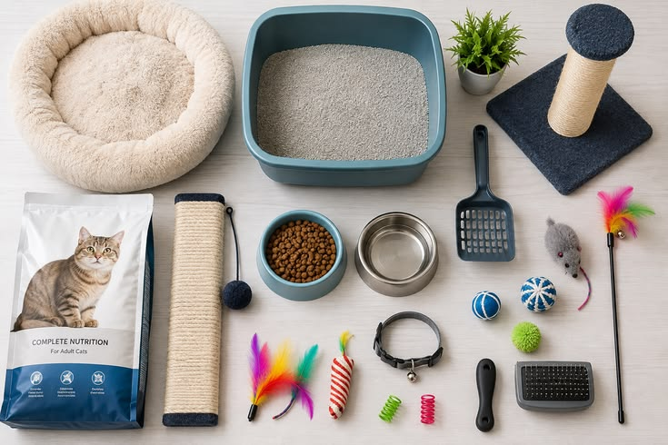

Cuidar de um gato vai muito além de oferecer comida e um lugar para dormir. Esses animais possuem necessidades próprias e precisam de um ambiente seguro, confortável e estimulante. Confira algumas dicas que podem ajudar a tornar a rotina do seu gato ainda melhor!
Os gatos precisam ter acesso constante à água limpa e fresca. Espalhar recipientes pela casa ou utilizar uma fonte de água pode incentivar o consumo e tornar a hidratação mais interessante para o animal.
Brincadeiras ajudam a estimular os instintos naturais dos gatos e também podem evitar o tédio. Reserve alguns minutos do dia para brincar com seu gato utilizando brinquedos apropriados e atividades que estimulem sua curiosidade.
Gatos são animais curiosos e gostam de explorar. Por isso, é importante manter janelas e varandas protegidas, guardar objetos perigosos e evitar o acesso a locais onde o animal possa se machucar.
A higiene da caixa de areia é importante para o conforto do gato e para a limpeza do ambiente. Remova os resíduos regularmente e mantenha a caixa em um local tranquilo e de fácil acesso.
Cada gato possui sua própria personalidade. Alguns gostam de receber bastante carinho e atenção, enquanto outros preferem momentos de tranquilidade. Respeitar os limites do animal ajuda a construir uma relação baseada em confiança.
Existem diversos produtos desenvolvidos para tornar a rotina dos gatos mais confortável e divertida. Confira alguns itens que podem fazer parte do ambiente de um gato:
As fontes de água mantêm a água em movimento e podem incentivar alguns gatos a beber mais. Também são uma opção interessante para quem busca praticidade na rotina.
O arranhador permite que o gato exerça seu comportamento natural de arranhar, além de oferecer uma forma de entretenimento e estímulo físico.
Brinquedos interativos podem estimular a curiosidade e os instintos naturais dos gatos. Bolinhas, brinquedos com penas e outros modelos podem proporcionar momentos de diversão durante o dia.
Uma cama ou toca oferece ao gato um espaço próprio para descansar. Muitos gatos gostam de locais confortáveis e tranquilos onde possam dormir ou simplesmente observar o ambiente.
A caixa de transporte é importante para deslocamentos seguros, como viagens e visitas ao veterinário. O ideal é escolher um modelo adequado ao tamanho do gato, confortável e com boa ventilação.
Pequenas mudanças na rotina e no ambiente podem fazer uma grande diferença para um gato. Água fresca, brincadeiras, espaços seguros, higiene e respeito aos seus limites são alguns dos elementos que ajudam a proporcionar uma convivência mais tranquila e agradável.